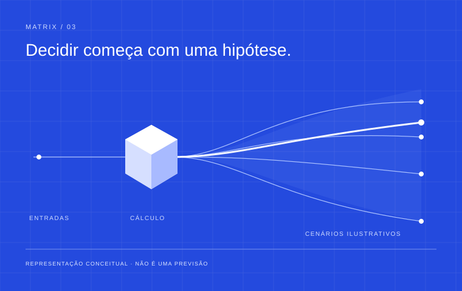

Simulação + engenharia de dados
Matrix.
Explorar cenários antes de decidir.
Um MVP de simulação que combina engenharia de dados e métodos estatísticos, com limites claros para o papel da IA.

01 — O problema
Como organizar dados, métodos e projeções em um fluxo de simulação que permita examinar as premissas de uma decisão?
Matrix é um projeto em equipe da plataforma Odin. Seu conceito de gêmeos digitais sintéticos procura apoiar a exploração de cenários antes de uma decisão.
Para quemPessoas que precisam explorar cenários e interpretar projeções.
02 — Minha contribuição
Como Gerente de Desenvolvimento, arquitetei e construí a engenharia do MVP: motor de simulação, seleção de estimadores, camada de IA e estrutura de dados.
O conceito de gêmeos digitais veio da equipe. A fundamentação estatística foi desenvolvida com Davi Mariani. O projeto integra a plataforma Odin.
03 — Decisões do projeto
Separar cálculo e interpretação
O motor Monte Carlo usa semente fixa; a seleção de estimadores segue regras. A IA propõe e roteia métodos e interpreta saídas, sem assumir o cálculo dos resultados numéricos.
Colocar a validação no fluxo
A descrição do MVP inclui calibração walk-forward e predição conforme. São componentes da abordagem implementada, não prova de acurácia ou garantia sobre cenários futuros.
Estruturar a base
A engenharia utiliza Neon/Postgres, recuperação de conhecimento com pgvector e governança de dados em três níveis. Esta apresentação mantém apenas o escopo já descrito publicamente.
04 — O que foi entregue
A entrega registrada é um MVP que encadeia entrada de dados, métodos estatísticos, projeções e interpretação. Não há benchmark público que permita afirmar acurácia, ganho financeiro ou validação em produção.
05 — Estágio e limites
MVP · projeto em equipe. MVP registrado no portfólio anterior; período de execução não informado.
Estágio registrado: MVP. Não são disponibilizados dados operacionais, código proprietário ou uma demonstração pública do sistema. A operação atual não foi revalidada.
- Python
- Estatística aplicada
- Postgres
- IA aplicada